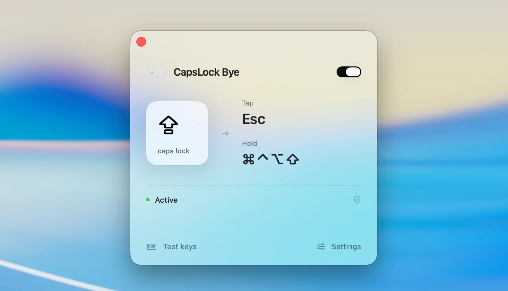

TAP01
轻点，发送 Esc。
退出 Vim 插入模式，或者关闭弹窗。用 Caps Lock 发送 Esc，手不用离开主键区。
还可以设为其他按键，或录制快捷键。一个小巧的 Mac 键盘工具
把 Caps Lock 改成用得上的键。轻点退出，按住再接一颗键，就能触发设好的快捷操作。
macOS 14+ · Apple Silicon 与 Intel
试着轻点或按住上面的键帽，也可选择「轻点 / 按住」。
装好后，留在菜单栏就行。
01轻点与长按
写代码时轻点退出插入模式，按住再接一颗键，就能触发你设好的快捷键。
退出 Vim 插入模式，或者关闭弹窗。用 Caps Lock 发送 Esc，手不用离开主键区。
还可以设为其他按键，或录制快捷键。一颗键按下 ⌘ ⌃ ⌥ ⇧。在 Alfred、Raycast 等工具中绑定 Hyper 组合键，设置你常用的操作。
默认 180 ms 判定；接其他按键立即触发组合。
实际应用界面 · macOS 2602原生 Mac 应用
开启映射后就能关掉窗口。需要调整设置时，点一下菜单栏图标。
轻点快捷键、长按修饰键、判定时间都可以调整。内置试键区，改完即可试。
在本机处理按键，不记录或上传输入内容。无需账号，也不安装驱动。
支持中文与 English、可选登录启动。macOS 26 使用 Liquid Glass，14–15 使用系统材质。
03安装与授权
下载最新版本的 DMG，打开后将 CapsLock Bye 拖到 Applications，再启动应用。
已签名 · 已通过 Apple 公证跟随应用引导，在「系统设置 → 隐私与安全性」中开启辅助功能和输入监控。按提示重新打开应用。
用于接收按键并发送映射后的操作开启映射，在试键区检查轻点与长按。关掉窗口，让它待在菜单栏，继续你的工作。
左击菜单栏图标打开 · 右击暂停或退出Hyper 是 Command、Control、Option、Shift 四个修饰键的组合。CapsLock Bye 负责发送组合键；你可以在 Alfred、Raycast 或其他支持自定义快捷键的工具里，为 Hyper 加其他按键绑定操作。
请停用其他工具对 Caps Lock 的映射，并在键盘固件和 macOS 系统设置中保留 Caps Lock 的默认定义，避免同时改写同一颗键。
macOS 的安全输入启用时，应用会暂停映射，例如某些密码输入框中。退出安全输入后，映射会自动恢复。
辅助功能未生效时，尝试关闭再开启该权限；输入监控未生效时，完全退出应用后重新打开。列表中找不到应用，可点击「+」手动添加。仍有问题时，请提交 Issue 并说明 macOS 版本和键盘型号。
免费，MIT 开源。需要 macOS 14 或更新版本，通用安装包支持 Apple Silicon 与 Intel。最新发布页同时提供 DMG 和对应的 SHA256 校验文件。
CapsLock Bye
免费、开源，支持 macOS 14 或更新版本。